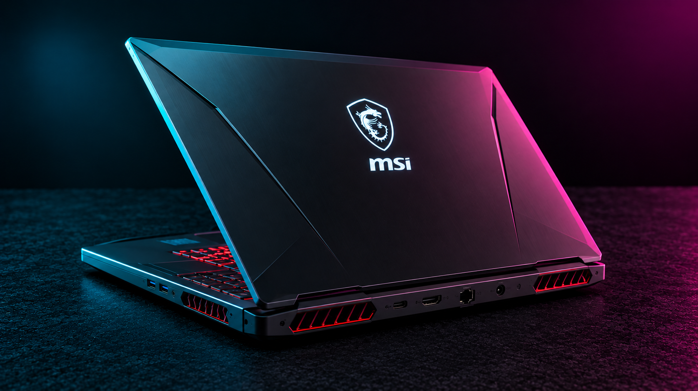

Technical Reference
Startup and firmware
| Topic | Procedure / notes |
|---|---|
| BIOS / UEFI | Del during startup (common on MSI notebooks); some models use F2 |
| Boot device selection | F11 on many MSI laptops |
| Recovery | F3 recovery on supported factory images; recovery partition must exist |
| Model identification | Check underside model code and MSI support page before flashing firmware |
Repair workflow
| Topic | Procedure / notes |
|---|---|
| Battery and power | Shut down, disconnect AC, open according to model service instructions, disconnect internal battery before cables. |
| SSD and RAM | Check soldered vs socketed memory, M.2 slot generation and supported SSD dimensions before ordering. |
| Thermals | Inspect fan operation and dust buildup; document thermal-pad thickness before replacing pads. |
| Firmware | Use exact model and board revision; maintain AC power and do not interrupt flashing. |
Common faults
| Topic | Procedure / notes |
|---|---|
| No power | Check adapter wattage, DC-in or USB-C PD compatibility, battery connection and charging indicators. |
| Black screen | Test external display, brightness, RAM seating if serviceable and firmware recovery options. |
| High temperatures | Review fan curves, vents, heatsink contact and background load; compare idle/load temperatures. |
Service note: Model, firmware version and region can change key combinations and hardware options. Verify the exact device service manual and back up important data before repairs.